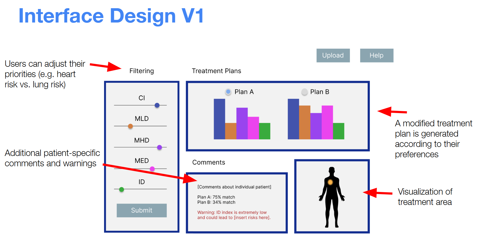
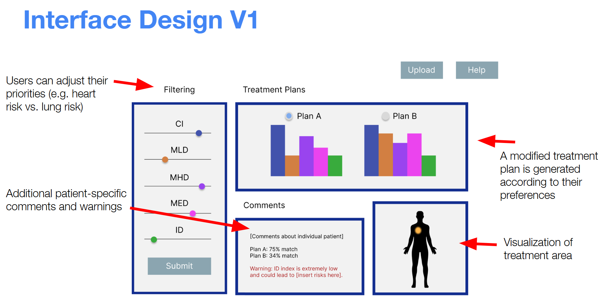

| Assisted AI in Clinical Decision-Making | Designed software aimed to satisfy FDA regulations for a proposed medical software simplifying patients’ decisions on radiation treatment plans for non-small cell lung cancer (NSCLC), using a digital twin framework. |

|
| Seeing the Future Self: Effects of Dynamic Age Visualizations on Intertemporal Decision-Making | Older adults today face a myriad of problems, from financial difficulty to extreme health conditions. Many of these issues stem from young adult life decisions, such as failure to save for retirement or unhealthy lifestyle choices. Previous research suggests that intertemporal choices like these can be traced back to the concept of future self-continuity. Increased connection to one’s future self has been linked to more exercise (Rutchick et al., 2018) and more ethical behavior (Hershfield et al., 2012). Hershfield et al., 2014 found that viewing age-progressed renderings of oneself increased retirement-saving behavior through efforts to increase future self-continuity. Fox & Bailenson, 2009 concluded that viewing a virtual progression of oneself transforming in weight was more effective in changing exercise habits than viewing a static outcome. Based on this research, the current study tested the effects of viewing a static, aged image or a dynamic, aged progression video of oneself on intertemporal decision-making, using a modern, advanced age-transformation model. We hypothesized that participants would make long-term choices more beneficial to their older self when viewing a progression than when viewing a static image of their older self. We also predicted that the groups viewing their future selves would engage in less temporal discounting and make better long-term decisions than those in the control group (viewing their current selves). No significant correlations were found, and differences in temporal discounting and future self-continuity between the conditions were minimal. We suggest that further research is needed to shed light on the extent of future self-continuity’s role in intertemporal choices, as well as the potential benefits of dynamic progressions versus static images. |
|
| Title | Date Created | Description | Topics |
|---|---|---|---|
| JE Breakout | 2021 | You’ve just finished another late night of studying at Upper Taft for your exam tomorrow...well, today. It’s 6AM already, and everyone else has already left. As you are about to exit down the spiral staircase to return to your suite, the exit door is locked...might want to find a way out of here ASAP. | Yale history, Jonathan Edwards |
| Hebrew Time Machine | 2021 | An escape room designed as a final project for a Hebrew course. | Israeli movies |
| Yale Children's Theater Class | 2021 | A collaborative project for Yale Children's Theater final class. | acting prompts for children |
| Journey to Ancient Rome | 2020 | You come into History class, and your teacher is nowhere to be found! Instead, you find a time machine with a note attached to it: 44 BCE. Having no clue what's happening, you jump in and find yourself in ancient Rome. After walking around for a bit, you decide it's time to go back to the present. Except...the door to the time machine is locked!! If you don't unlock the door in one hour, the time machine will explode, and you will stay stuck in ancient Rome forever! | history, ancient Rome |
| Code Red | 2017 | A fire has just started in your workplace, Ridgeview Hospital! There is a safe full of the hospital's savings - if only you knew the combination! If you can unlock the safe before the fire reaches it, you may be able to make it out alive, and also save Ridgeview Hospital from millions of dollars in debt! | science, history of medicine |
| Art Museum Mystery | 2016 | Late last night, someone killed a guard inside the Breakout Art Gallery. He or she then stole a painting off of one of the exhibitions, and left without being seen. All we know is that he/she had to have been an artist from the gallery, because they are the only people with a key to the gallery. The thief also hacked into our site, and, lucky for us, left clues about every other artist in the gallery except for him or her self...why don't you take a look at the site and see for yourself? Could you be so kind as to help us solve the crime, and find justice for that poor security guard? | murder mystery, art |
| Broadway or Bust | 2016 | You're just about to fly to New York and audition for your dream show, when you realize your ticket has gone missing. Your arch enemy stole your ticket and hid it away in a locked box that is located somewhere in the airport. Luckily, you've located the box. However, the box has five locks - all related to her favorite Broadway shows... it's up to you to unlock the box and get to New York in time for your audition! | musical theater, broadway |